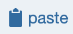
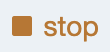
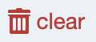
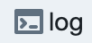
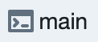

The Log and Notebook¶
As mentioned in the section on the Main Interface, there is a component at the bottom of the screen called the Log. Tiles can send information to the Log, and some error messages will show up there. The Log is also designed to be used more like a full-fledged python notebook.
Furthermore, you can create projects that consist of nothing more than a Notebook of this sort. There are two ways to create one of these Notebook projects. First, from within the Main Interface, you can go to the Project menu and select open-console-as-notebook. This will start a Notebook project using the current contents of the Log.
The second way to create a Notebook project is from the Library manager. Activate the projects pane. Then select New notebook from the Open menu.

Logs and Notebooks pretty much work the same way. You use the buttons at the top to manually add new elements:

Add a new text cell.
Add a new code cell.
Add a link to a library resources. You will be prompted to select the resource. The link is currently always added at the end of the cell.
Copies the current cell to a special cell clipboard. It provides a mechanism for copying cells across projects.
- 
Pastes the cell from the special cell clipbaord
Clears the log namespace and clear all code output
- 
Stop any running cells.
- 
Entirely erases all contents from the log.
- 
Shows the error console for the log container.
- 
Shows the error console for the main container.
{kind=link}
{kind=link}
{kind=link}
{kind=link}
{kind=link}
{kind=link}
{kind=link}
{kind=link}
{kind=link}
{kind=link}
Text fields¶
You can create a text field by clicking the text button. You’ll get something that looks like this:
You can enter text as Markdown and Latex (see below). If you do, clicking the convert markdown button displays the formatted text. You can also hit command-enter to convert.
Clicking the bottom button again toggles the display back to plain text. You can also double-click on the converted markdown to go back to editing.
Currently, the library that is used to do the conversion of the markdown to html is markdown-it. The library used to convert Latex is markdown-it-latex. Refer to the docs for these libraries for syntax specifics.
Code fields¶
You create a code field by clicking the code button:
In many ways, code fields in Logs and Notebooks function like a tile. You can write any code that you can write in a tile, which means you can test code here, and that you have access to the whole tile API. (However, some of these commands won’t make sense in Notebooks.)
Any local variables you introduce within a code field are added to a global namespace. This means that these variables shared across the code fields in your Log/Notebook.
Like a tile, output here is treated as html. So you might need to add
html tags to get the output that you want. For example, you might want
to wrap your output in <pre>..</pre> tags.
You can display plots in the console just as you’d expect. But you have to use the same magic commands as in a tile. So it’s a little ugly:

You can also work with the Matplotlib interactive mode if you use the self.create_pyplot_html()
magic command:

Keyboard shortcuts¶
The normal keyboard shortcuts work inside of code items. In addition, Ctrl-Enter and Cmd-Enter will execute a cell. Those same two shortcuts, executed inside of a text cell, will display the formatted text.
Some final generalities¶
You can reorder fields by dragging on dragging spot
About the reset button:
Clicking the reset button does a few different things:
It clears the output area of any code tiles.
It stops and restarts the python process so that the internal state is entirely cleared.
About the clear button:
Clicking the clear button button does everything that reset does, and it also removes absolutely everything from the log.
About the copy and paste buttons:
These provide a means of copying and pasting cells across projects. Copy will copy the current cell. Paste will paste a copied cell, if there is one. So, for example, you can create a notebook into which you copy results, such as plots, from the log of a project.
About the log and main buttons:
The log button shows the container log for the virtual tile associated with the log. The main button shows the container log for the container associated with the current project. Tactic tries to catch all errors and to display them for you in error drawer, or in alerts. But if you are getting unexpected behavior, and not seeing any normal error messages, then you can try looking at the container logs to get a sense for what’s going on. Problems with docker itself might also show up here.
About log item summaries:
When you shrink a log item, you will see the “summary” for the item.
The summary can be specified in the log_it command that creates a log item.
You can also directly edit the summary after shrinking a log item.
About saving:
When you save a standard project or notebook, Tactic attempts to save both the appearance and internal state of the Notebook. The saving of internal state is still an iffy business however.